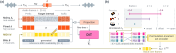

Abstract
Music creation often involves iterative refinement, changing selected musical details while retaining the rest. To support such refinement, we introduce SpanSynth-Edit, a flow-matching model for MIDI-guided synthesis and editing of multi-instrument audio mixtures using low-frame-rate scalar-quantised latents. MIDI Span encodes instrument-labelled note lifecycles as unordered event sets with continuous-valued attributes and pools each set into one conditioning vector per audio-latent frame. The model uses contextual audio for instrument-specific timbre guidance and supports editing by resynthesising the target region from revised MIDI. Experiments on single- and multi-instrument benchmarks show competitive performance and demonstrate within-frame onset control. We also discuss limitations of transcription-based note-adherence evaluation.
Model overview
Open full-size figure
Audio demos
Listen alongside the MIDI and reference audio.
In this POP909 task, Modulator, an external symbolic music generation model, inpaints the MIDI notes in a selected piano passage. These examples test whether audio models can render the inpainted MIDI notes while preserving the surrounding audio. Compare the before/after MIDI and the generated audio below.
Model reference: K. Bhandari, M. Bizzarri, G. A. Wiggins, and S. Colton, “Change is Key: A generative framework for controllable musical modulations,” Hugging Face model repository, 2026.
EARLY DEMO